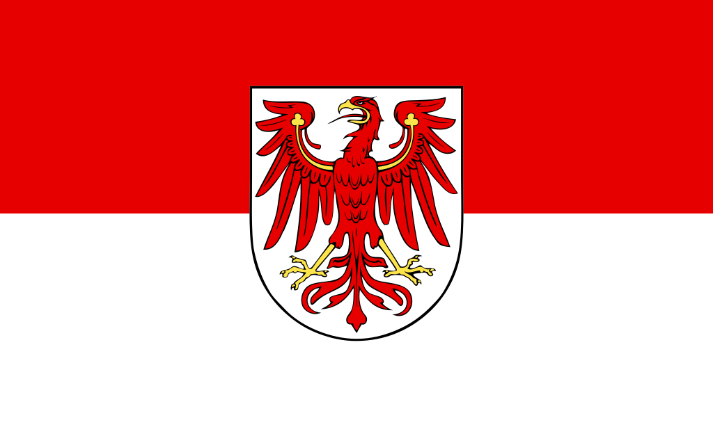
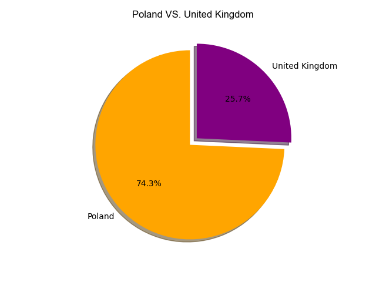
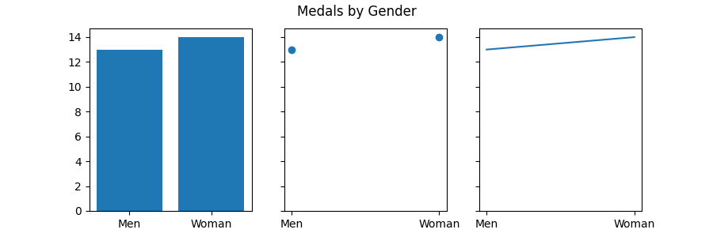
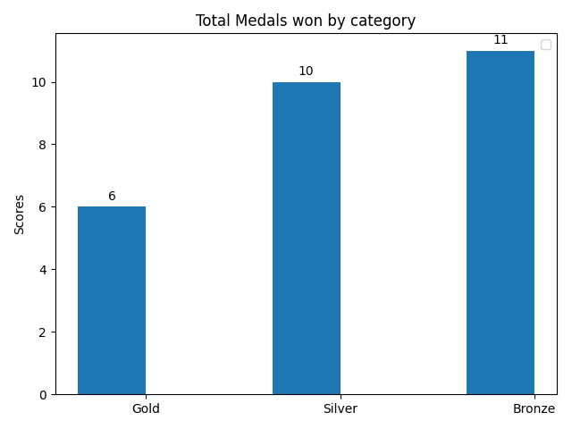
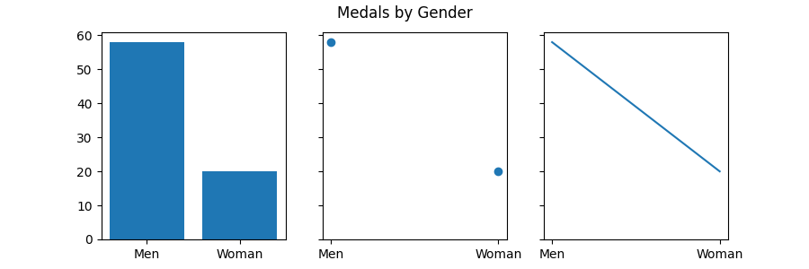

"Poland vs. Great Britain" OLYMPIC DATA ANALYSIS

The current population of Poland is 37,828.086 based on Worldometer elaboration of the lastest United nations data, and in comparison with Great Britain which has 68,047,013 people is a country that has managed to emerge economically, demographically and systematically. The Olympic Games being one of the most important events worldwide give the opportunity to different countries to grow as a nation, and clearly for these two countries it was. Statistical data showing the achievements of these two countries are presented below:
Data Point 1
As shown above, there is no significant percentage difference in the performance of these two countries. However it is evident that talking about silver medals both have won the same percentage.
Data Point 2
Performance and Statistics in Poland
Distribution of Medals by Gender
According to the pie diagram, it can be observed that the total percentage of medals obtained by men and women are similar, however women take advantage with a total of 14 medals compared to men who get 13 in total. In conclusion, it could be said that the performance of both genders was even, with only one medal difference.
Data Point 3
Medals
Poland at the Olympic Games is represented by the Polish Olympic Committee, a member of the International Olympic Committee since 1919. According to the chart, the country has won a total of 27 medals from 1924 to 2014: 6 gold, 10 silver and 11 bronze.
Although it has not been the best performing country, Poland has had the opportunity to continue participating in various editions of the Olympic Games around the world and has achieved several victories.
Data Point 4
Performance and Statistics in Great Britain
Distribution of Medals by Gender
This country hosted the Summer Olympics three times, all in London: 1908, 1948 and 2012. The city was also designated to host the 1944 Olympic Games, cancelled by World War II.Unlike Poland, United Kingdom or better known as Great Britain, has had great relevance in the Olympic games. In this first graph we can see that men have better performance than women with a total of 58 medals against 20.
Data Point 5
Medals
If we compare the medals obtained by United Kingdom and Poland, we can observe that at the level of gold and bronze medals, Great Britain leads, but if we compare the silver medals, Poland has a better performance.

Sport in the UK has been a significant social and economic activity. Similarly, the United Kingdom has been one of the most influential countries in world sport.Recognition that has made this country do better and better in the Olympic games.